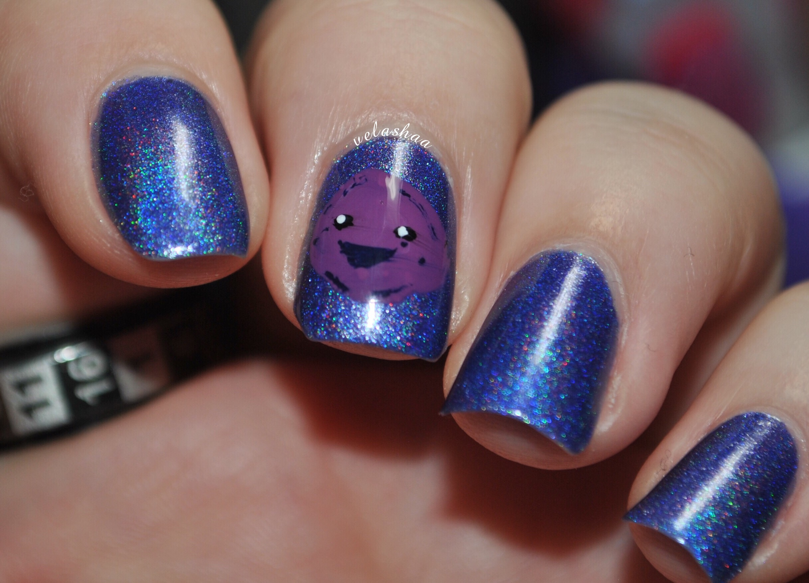

Art Time!
Indie nail polish isn't just for regular manis. Indies allow for the utmost creativity from their wearers, especially when it comes to nail art.
There are brands that make nail art supplies, too! Some of those supplies include:
- Stamping plates and jelly stampers
- Magnetic polishes and magnets
- Watermarbling and fluid art tools
- Water decals and stamps
